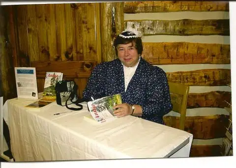

 |
| Author Lenore Puhek “in character” |
{kind=link}
“Don’t Give Up On The Dream” by Lenore Puhek
Dear Roxane:
How nice of you to write asking about my career as a writer. I can honestly say I believe it is a gift from God. To verify that statement, let me say I cannot ever remember being taught to read and write. When I started kindergarten I tested at second grade level in those two subjects. Now, math? That still is another story.
I just “knew” how to do it. I was a constant entrant to Jack & Jill Magazine, hoping against hope to win a puppy with my poem or short story. Nada.
When I was in high school I was the editor of “Spires,” our newspaper. Our yearbook says, “Will someday write the all American Novel.” Erma Bombeck became a personal friend and I cherish the correspondence we shared.
I continued with life. I married Prince Charming, and worked as a secretary to put him through college. My writing dream was buried but not forgotten, due to the birth of my son, Joseph. Joseph had a birth defect that required all my time and, thankfully, I was able to care for him 24/7 until his death at age 17.
Through the years, I have written hundreds of magazine articles, travel pieces, historical pieces, poetry, recipes, books, and have even received some really unique and wonderful awards for that work. Recently, I was given an all expense trip to NYC to speak to a group of Civil War Re-enactors of the Irish Brigade. My first book is about that group’s original leader. It is titled, The River’s Edge.
My second book, ANNIE, is focused on pioneering spirit. Both books have been selected to be audio books for the visually impaired and have been processed by the State of Montana Library. They can be checked out like library books. I am most proud of this honor over any and all I have been awarded.
Eons ago, however, I had a huge stack of rejection letters, some hopeful, some downright rude. I joined writer’s groups, attended conferences and learned the tricks of the trade. It does no good to send a story about cats to a dog magazine and then wonder, even though it is a masterpiece, why they didn’t buy it.
Discouragement? Oh! Yes. Times of stopping writing all together? Well, kind of. The flame to write always burned in my soul. Sometimes it smoldered, but it never was distinguished, even when cold water was tossed upon the desire.
After my husband died, I was thinking about my future. I believe this time has been given to me as a reward for being a faithful wife and mother over the years. “There is a time and a place for everything,” the Good Book tells us and God’s timing is not necessarily our timing. I began writing again, burning the midnight oil at the computer, passing through the dark night of the soul. My writing became a great catharsis for my grieving, ultimately leading me out the other side into a beautiful new life that I continually thank God for and am in awe of. ME!
To discipline myself to work on a book proved a mighty task. I have files full of wanna-be novels. To my credit, I have two published books, and I am working on that gang-buster, All American Novel. You know, the one they will want to make into the movie of the year? It will be out by summer’s end, hopefully.
I have a degree in English/writing. For many years I have been active in the writing community, and I have started several writing groups. Fun projects include editing and doing work-for-hire research. Private tutoring brings in some financial help. Teaching adult education classes is a great way to stay in the writing game. There are so many angles to writing. Even your grocery list is a writing exercise.
To promote my work, I uncovered another talent: acting. For several years now, I take on the first person character in my books. I advertise I am available to speak at luncheons, dinners, conventions, craft shows…any opportunity to have my book for sale. I dress in authentic period costume to transport the audience back to another time. It does no good to write a book and not promote it yourself.
My books are set in the Victorian era of 1800s to 1900s, a Montana historical period of growth. I choose women who gave so much of themselves in very ordinary ways, but whom I believe deserve recognition today.
The industry has changed drastically. To get any press at all, the author, even famous ones, have to do book-signing tours to keep the book in the public eye. The publishers do not set up tours and treat the author royally. Those days are gone. To be given six months of a book store’s shelf space is an honor.
Don’t write for publication. Write for the joy of writing. Keep up with their guidelines that are available to every writer just for the asking and possibly a postage stamp and envelope. Some are available now on the web sites. Spend time learning about the business. Read the magazine before you send in your work to see if it has the standard of quality they look for.
There are many pitfalls that can be avoided by doing your homework first. I spend one day a week looking for periodicals that might like my type of work.
Yes, we all want to write for the New Yorker some day, and maybe you will. I am content writing for the smaller presses and having the check in the mail. The stresses are less and the rewards are great, seeing your work in print.
Any advice for writers? Well, most importantly, write for yourself and keep writing. Read every kind of book you can for style and focus. Decide what interests you. Spend time on the web looking up bits of information, filing it away for that “someday dream” resurfacing into your life.
Be able to take constructive criticism. Don’t assume your readers know what you are writing about. Most of my work goes through at lest five rewrites before I send it out. Be professional in your dealing with editors. Keep your questions short and to the point if you telephone them. You can talk an article to death before you even put it onto paper.
Oh, I did a lot of volunteer writing when I first got started. Call your church office and offer to type up the bulletin for a while and see if you can maybe get some work through church reports. Offer a monthly column to your local newspaper on any subject dear to you, things others would find humorous and helpful.
Be positive and write in active voice. What is active voice? Here is an example between passive and active voice:
The mouse was eaten by the cat. = Passive. The cat ate the mouse. = Active. Do you spot the key words in both sentences? See the prepositional phrase?
Remember that the writing never put out to the public is never seen. You have to develop a thick skin to take the rejection that will come. Learn from others. Let God direct your path. Write to let your light shine and always remember the source of your writing talent.
Have a happy spring,
Lenore McKelvey Puhek
P.O.Box 6002
Helena, Mt. 59604
[Greetings from Roxane, readers! And welcome to Peace Garden Writer, Lenore. As you can see, readers, I’m trying a new format for my guest posts. Instead of sending out questions, I’m allowing the writer to go where she feels most comfortable. I hope you enjoy the new format, as well as meeting Lenore, someone I consider one of several wonderful writing mentors I’ve been privileged to know!]
Q4U: What struck you about Lenore’s story? Is there anything that made you pause and want to know more? I’ve asked Lenore to stop by and answer any questions from readers, so here’s your chance!